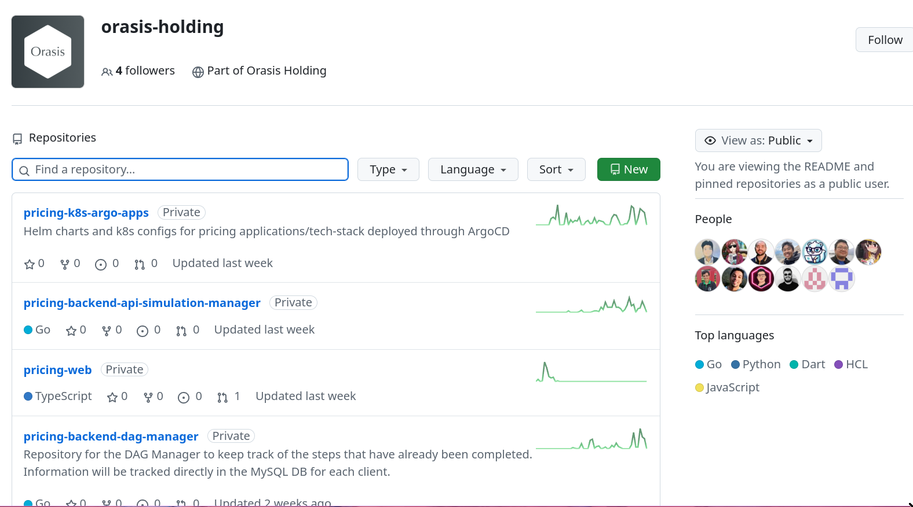

My Journey
Pedro G. Branquinho
View this presentation
QR Code
Hello there 😁
Curious 👾
Love to build useful little apps 🎆
Self-taught
Great at learning from:
- Documentation 📑
- Books 📚
- Video-Courses 📹
- People’s shared experiences 🤓👂
Thriving programmer
- Industry: small and big.
- Crafted-solutions: acted upon workflow automation in the back-end.
- Have been working on full-stack apps for 2 year.
My github
Programming
Clojure(Script) Developer
- Fullstack web development.
- Use Java and Javascript .
- Integrate.
Fundamental knowledge 📚
- Emacs
- Linux (Arch + Debian )
- Bash + Go + Python
- HTML + CSS + JavaScript
- Git
- Coffee .
Related to Numerical Computing
In the University of São Paulo and Freelancing:
- ODE/PDEs and Multivariate Statistics.
- Julia;
- Python;
- R.
My formal education
- Engineer Physicist at USP.
- Programming experience with:
- Statistics.
- Numerical computing.
- Repositories:
- https://github.com/BuddhiLW/EEL-USP
- https://github.com/BuddhiLW/DatasetsEstatistica
- https://github.com/BuddhiLW/EEL_EstatMultiVarRN
- https://github.com/BuddhiLW/30-HypothesisTesting
- https://github.com/BuddhiLW/StatsWithJuliaBook
- https://github.com/BuddhiLW/Minicurso-LaTeX-SEMEFVIII
- https://github.com/BuddhiLW/ClassImbalance.jl
- https://github.com/BuddhiLW/Blackjack-Simulations
- Repositories:
Languages I speak
- Portuguese 🇧🇷 – Native
- English 🇺🇸 – C2 (Maximum-range score)
- Mandarin 🇨🇳 – Basic
- Russian 🇷🇺 – Basic
Job Experience
Lupo S.A.
- Technical Report Automation.
- Inventory of 300+ machines.
- Used Clojure (not best choice).
- Code: https://github.com/BuddhiLW/CloshBashika
Example

Freelance with a group of Safety Engineers

Flow Finance
- Clarence and Leadger
- Automate billing
- APIs and Routing
- Clojure(Script)
- Code: https://github.com/BuddhiLW/commons-csv-clj
Example
(defn cnpj#
"take a =CNPJ-value= and narrow down to the subclass which has this CNPJ"
[CNPJ-value vec-revenues]
(filter #(submap? {:CNPJ CNPJ-value} %) vec-revenues))
(cnpj# "17194123000103" vec-revenues)
Literate documentation

Café do Bem (NPO)
- High quality coffee.
- The gains returns to coffee producers.
- Resilience for the coffee community.
- https://cafe-do-bem.company.site/
The website

FACTI - Campinas, SP
Fundação de Apoio à Capacitação de Tecnologia da Informação
Help desk app (a week)
Fast PDFs with a lot of banking data
As a Contractor
Advanced statistical analysis of Bidding prices

Data converter XML to CSV
<?xml version='1.0' encoding='utf-8'?>
<ns3:Servico>
<ns3:Valores>
<ns3:ValorServicos>102349.00</ns3:ValorServicos>
<ns3:IssRetido>2</ns3:IssRetido>
<ns3:ValorIss>0.00</ns3:ValorIss>
<ns3:BaseCalculo>102349.00</ns3:BaseCalculo>
<ns3:Aliquota>0.0425</ns3:Aliquota>
<ns3:ValorLiquidoNfse>102349.00</ns3:ValorLiquidoNfse>
<ns3:ValorIssRetido>0</ns3:ValorIssRetido>
</ns3:Valores>
<ns3:ItemListaServico>2501</ns3:ItemListaServico>
<ns3:CodigoTributacaoMunicipio>
960330400</ns3:CodigoTributacaoMunicipio>
<ns3:Discriminacao>- PLANOS FUNERÁRIOS RECEBIDOS EM MARÇO -
R$ 102.349,00 - VALOR APROXIMADO DOS TRIBUTOS - R$
13.366,78</ns3:Discriminacao>
<ns3:MunicipioPrestacaoServico>
3516200</ns3:MunicipioPrestacaoServico>
</ns3:Servico>
Data converter XML to CSV
- 2409 instances of data.
Date, Prestador, RazaoSocial, CPF, Tributos, ValorServico
2018-01-05T10:32:20, FUNERARIA FRANCANA LTDA, RITA APARECIDA PEREIRA DA SILVA, 19636387869, 456.48, 3600.0
Data converter XML to CSV
(defn ->row-csv
"razão-social, cpf, prestador, tributos, valor-seviço"
[data]
(let [date (h/date data)
rs (h/tomador-razao-social data)
cpf (tomador-cpf data)
prest (prestador data)
trib (str (tributos data))
valor-servico (str (val-serv data))]
(-> (->> [date prest rs cpf trib valor-servico]
(interpose ", ")
(apply str))
(clojure.string/replace "\n" "")
(clojure.string/replace #"\s+" " ")
(str "\n"))))
Data converter XML to CSV
(defn tributos [data]
(-> (->> data
:content
(filter #(= (:tag %) :Servico))
first
:content
(filter #(= (:tag %) :Discriminacao))
first)
:content
first
parse-trib-val))
Data converter XML to CSV
(h/tributos (first data))
=> 456.48
Analysis of Growth

Analysis of Tax and Revenues

Analysis of Tax and Revenues

Analysis of Tax and Revenues

Find and explain abnormalities in Revenue
subset(df_mmz, :Serv_z => ByRow(<(-1.5)))
8×6 DataFrame
Row │ Data_function Tributos_sum ValorServico_sum id Trib_z Serv_z
│ Tuple… Float64 Float64 Int64 Float64 Float64
─────┼──────────────────────────────────────────────────────────────────────────
1 │ (2018, 5) 11417.4 83590.0 5 -1.67904 -1.90722
2 │ (2018, 7) 13226.0 96458.0 7 -1.35084 -1.51121
3 │ (2018, 8) 12309.0 89650.0 8 -1.51725 -1.72072
4 │ (2018, 9) 10813.5 80870.0 9 -1.78863 -1.99092
5 │ (2018, 10) 11929.1 86760.0 10 -1.58619 -1.80966
6 │ (2018, 11) 11754.4 86400.0 11 -1.61789 -1.82074
7 │ (2018, 12) 11934.2 89160.0 12 -1.58526 -1.7358
8 │ (2019, 6) 9095.84 69021.4 18 -2.10034 -2.35555
Correlation between Tax and Income
cor(df_mm.Tributos_sum, df_mm.ValorServico_sum)
89.12%
Hypothesis test data on equal variation
- Julia interoperation with R.
trib_z = df_mmz.Trib_z
val_serv_z = df_mmz.Serv_z
R"var.test($trib_z, y = $val_serv_z)"
F test to compare two variances
data: `#JL`$trib_z and `#JL`$val_serv_z
F = 1, num df = 56, denom df = 56, p-value = 1
Orasis Holding
- SAGA pattern
- Microsservices inter-communication
- gRPC + Kafka (RedPanda)
- Restful servers (HTTP1/2)

Projects
HTML/CSS – Instagram Replica
JS/Elm – Matching Cards game
Clojure(Script) – Personal Website
Clojure(Script) – Giggin
- Not yet deployed.
- Shopping site.

Clojure(Script) – Certifications Portfolio
System’s functionalities
Pomodoro – Go/Bash
- Self-management.
- Data collection.
- Statistics about yourself.

Note-taking (Diary) – Elisp/Emacs
- Take notes, whitout the need to thing too much.
- Bind it to three key-strokes.
(defun lw/create-or-access-diary ()
(interactive)
(if (not (file-exists-p (lw/diary-day-entry)))
(or (write-region
(format "#+TITLE: %s" (shell-command-to-string "echo -n $(date +%Y-%m-%d) \n"))
nil
(lw/diary-day-entry))
(find-file (lw/diary-day-entry)))
(find-file (lw/diary-day-entry))))
Note-taking (Diary) – Elisp/Emacs

Trading Bot
Code (FOSS):
API Integration to Stark Bank
Main tasks - Invoice generation
Generate Invoice payment bills.
(invoice/create [(help/gen-invoice-map
(help/r-amount 100000)
(first (map help/due-timestamp (help/gen-three-hours)))
(cnpj/gen)
(names/name-maker)
(help/r-exp)
(help/r-fine)
(help/r-interest)
help/descr-ex)])
Server-side Webhook responses
- Deal with
POSTrequests, from Webhook. - Responses from Invoice Generation

Near future Goals
Next steps
- Write meaningful software ✅.
- 2000$ - 4000$ monthly ✅.
- Full Cycle MBA ⚙.
- Passive income greater than my Active income ⚙.